平静 content
默认待机脸
不是 logo，是手机里那个小家伙本体。三个方向都是分层 SVG（头 / 身体 / 四肢 / 尾巴 / 表情各自成组），颜色走 CSS 变量，可以直接进 React 组件、换色、做 CSS 动效或改 Rive。头身比统一按 Q 版 1:1～1:1.2 做。

奶油色麻薯质感的猫：大圆头 + 尖耳 + 圆身 + 短腿 + 卷尾巴。延续品牌里那只猫的记忆点，只是把它从「标记」变成「有身体的角色」。表情靠眼睛和耳朵，辨识度最高，和现有 logo、App 图标同源。

没有物种的圆豆子：上下两个球叠成的小泥人，头顶一根嫩芽当「天线」，尾巴是一小截卷须。最不像「宠物」、最像自有 IP 的一个；表情极简（豆豆眼），靠嫩芽和身体弹性做性格，适合长期做表情包和周边。

薰衣草紫的小怪兽：薄荷色小角、獠牙笑、铲形尾巴。最「有性格」的一版，适合做 AI 工作状态（敲键盘、冒汗、举爪），也最容易被记住；代价是离「安静陪伴的小宠物」远一点，更像游戏角色。
三个方向共用同一套骨架命名（pet-tail / pet-legs / pet-body / pet-arms / pet-head / pet-face / pet-shadow）。下面是 A 的拆解视图——代码里可以直接对任一组做 transform / 换色 / 显隐。
以 A 为例演示：头、耳朵、身体完全不动，只替换 pet-face 里的眼睛/嘴，就能覆盖「开心 / 困 / 惊讶 / 好奇」这些状态。三个方向都能套这个做法。
默认待机脸
摸头 / 完成时
夜间 / 低能量
提问 / 等你决定
三个方向不是“好不好看”的差别，而是产品性格的差别：A 延续品牌，B 造新 IP，C 更游戏化。
| 方向 | 气质 | 优势 | 风险 / 代价 | 最适合 |
|---|---|---|---|---|
| A 麻薯猫猫 Mochi cat |
暖、软、可依赖 | 和现有 logo / App 图标同源；一上手就“是它”；表情和动作都好做 | 猫型宠物赛道拥挤，缺一点“只有 Sidekick 才有”的记忆点 | 想稳妥延续品牌、快速落地 P0 |
| B 豆豆泥人 Mochi bean |
安静、无害、有点呆 | 非动物、无物种，最像自有 IP；造型极简，动画和周边成本最低 | 辨识元素少（只有嫩芽）；“宠物感”弱，需要靠动作和文案立人设 | 想做长期 IP、表情包、周边 |
| C 口袋小怪兽 Pocket monster |
有个性、有戏 | 表情和 AI 四态（敲键盘 / 举爪 / 冒汗）最好发挥；记忆点最强 | 离“安静陪伴”较远，容易做得吵；紫色在小屏上要压饱和度 | 想让宠物更有角色感、承接 AI 工作状态 |
选 A / B / C，或指定“A 的身体 + C 的尾巴”这种混搭，我把剩下的细节（耳朵角度、腿长、腮红、阴影）按你的口味调。
定方向后补 docked / handheld 两姿态、AI 四态（静态 / 工作 / 等待 / 完成）、睡觉和伸懒腰，仍然是分层 SVG。
把选中的 SVG 包成 React 组件，用 mood / aiState 切换 face 层，动效先用 CSS transform 跑起来；需要更自然的动作再接 Rive。